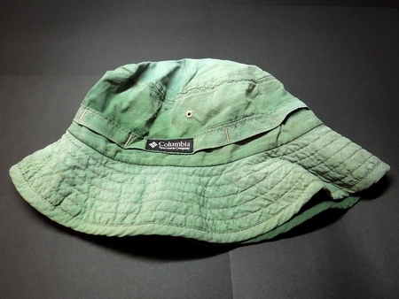
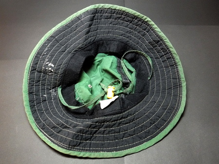

ティップス
釣りの前夜に 帽子のひさしの裏側を黒く塗ること
釣りに行く時にかぶる帽子のひさしの裏側を黒く塗っておくと、水面からの乱反射が抑えられ、視認性が向上します。偏光サングラスの効果がさらに高まります。


ツバ（ブリム部）の裏面に
買った時から黒い生地が使われている
買った時から黒い生地が使われている
高価な帽子を買わなくても、今使っているキャップ・ハットに黒色を塗ればOKです。
必要な物
- 百円ショップで売っている、艶消し黒色のラッカースプレー
- 〃 マスキングテープ
- 古新聞
作業方法
- キャップのひさし（バイザー部）、ハットのツバ（ブリム部）の裏面以外は、スプレーで黒くならないように、マスキングテープと古新聞を使って、しっかりと覆います。
- ハットの場合、ツバの全周を黒く塗らなくても、前方半分、ないし1/3くらいで良いと思います。
- 透湿防水性素材の帽子でも、ひさし・ツバを塗るだけですから、ラッカー系塗料で透湿性が失われても問題は無いでしょう。
- スプレーの使用法の指示に従って、黒色に塗装します。
- 日陰でよく乾かしてから、釣りで使用します。
- ハットのツバを塗装した場合、元の生地より少しゴワゴワするかもしれません。ご了承いただきますようお願いします。
使っている風景
2021/02/11
ティップス 目次へ
サイトマップ
ホームへ
お問い合わせ